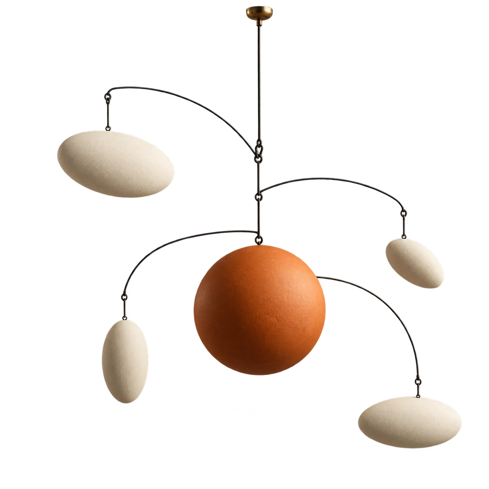

Your working documentSample research
Good ideas find each other.
Follow a thought. Find the thread. Make something of it.

18references
connected
connected
A thought from Orbit↗
100%
Follow a thought. Find the thread. Make something of it.
